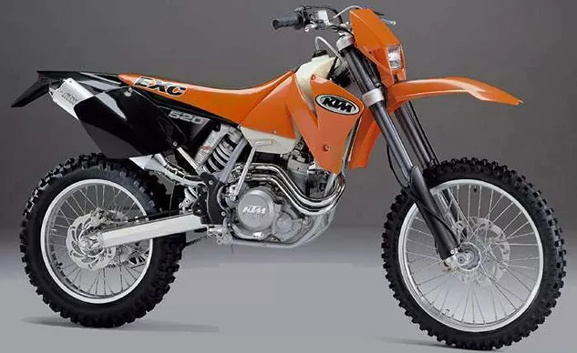
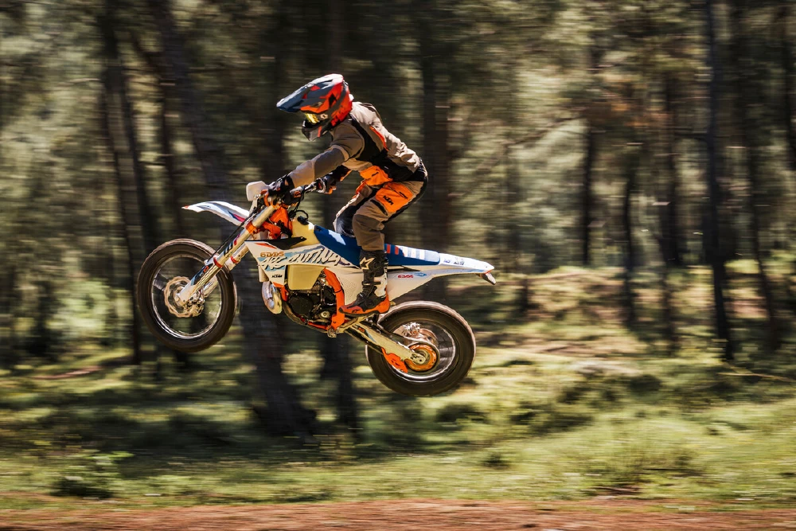

KTM 1980

In the 1980s, KTM (Kronreif & Trunkenpolz Mattighofen) underwent a significant transformation that would shape its identity in the world of motorcycles. While KTM had its roots in metalworking, it wasn't until the 1950s that the company shifted its focus to motorcycle production. However, it was the 1980s that marked a pivotal period for KTM, setting the stage for its prominence in the off-road and enduro biking scene.
After the 1980s, KTM, the Austrian motorcycle manufacturer, experienced a transformative journey that propelled the brand into new heights of success and innovation. Throughout the subsequent decades, KTM solidified its reputation as a leading force in the world of off-road and performance motorcycles. The 1990s saw KTM expanding its product line to include a diverse range of models, catering to different riding preferences and styles. The introduction of street-legal bikes broadened KTM's market reach, making the brand more accessible to riders who sought performance on both the road and off it.
KTM 2024
The 2024 KTM EXC model with TPI (Transfer Port Injection), that sounds like a thrilling machine! In 2024, KTMcontinued its legacy of innovation with the EXC lineup, showcasing the latest advancements in off-road motorcycle technology. The centerpiece of the 2024 EXC model was undoubtedly the implementation of Transfer Port Injection. This cutting-edge fuel injection system optimized fuel delivery to the engine, enhancing performance and fuel efficiency. Riders experienced a seamless blend of power and precision, ensuring optimal throttle response across various terrains.

The 2024 EXC with TPI maintained KTM's commitment to environmental sustainability by minimizing emissions without compromising power. This forward-thinking approach aligned with the evolving landscapeof the motorcycle industry, demonstrating KTM's dedication to both performance and eco-conscious engineering.